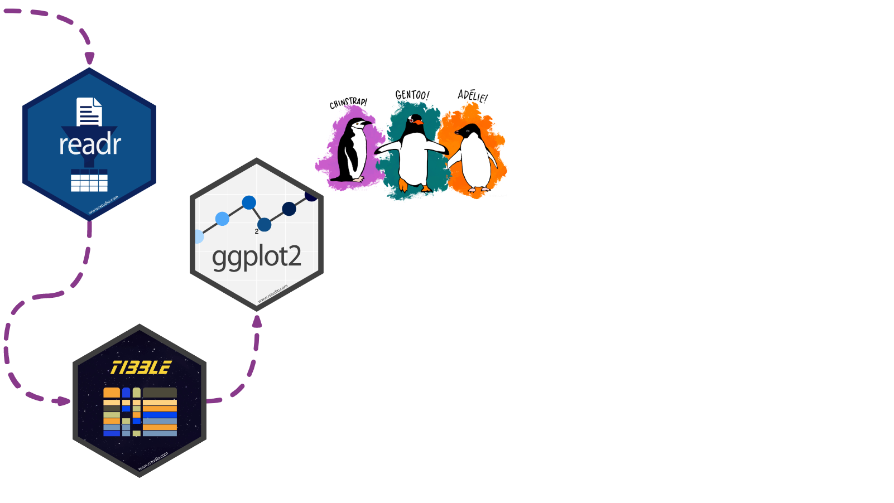
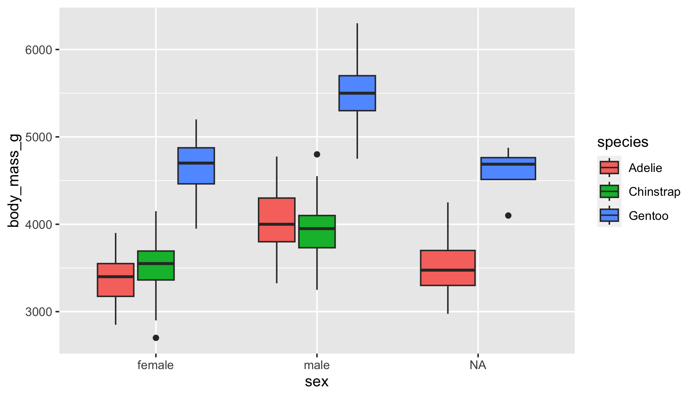

An Antarctic Tour of the Tidyverse v2.0

Before we begin
This written tutorial is an alternative to the slide content in slides.silviacanelon.com/tour-of-the-tidyverse-v2
palmerpenguins üì¶ developed by Drs. Allison Horst, Alison Hill, and Kristen Gorman.
This work is licensed under a Creative Commons Attribution-ShareAlike 4.0 International License
Meet our penguin friends!


Meet the tidyverse!
A collection of R packages, including these 9 core packages (and more!)
lubridate was welcomed into the tidyverse as a core package on August 12, 2022. You may need to install the development version:
readr 
Our penguin friends are starting their tour with the readr package!
Importing data is the very first step!
You can use readr to import rectangular data.
You can import…
- comma separated (CSV) files with
read_csv() - tab separated files with
read_tsv() - general delimited files with
read_delim() - fixed width files with
read_fwf() - tabular files where columns are separated by white-space with
read_table() - web log files with
read_log()
Cheatsheet
PDF: https://github.com/rstudio/cheatsheets/raw/main/data-import.pdf 
Reading

- R for Data Science: Ch 11 Data import
- Package documentation: https://readr.tidyverse.org
Exercise
Read data in
Options 1 & 2 below will get you the same raw dataset for Adélie penguins. Try it out!
Option 1: load using URL
Option 2: load using filepath
Option 3: Lucky for us, the palmerpenguins üì¶ compiles data from all three species together! Check the clean data and raw data tabs to learn more.
Clean data
penguins contains a clean dataset
# A tibble: 344 × 8
species island bill_length_mm bill_depth_mm flipper_length_mm body_mass_g
<fct> <fct> <dbl> <dbl> <int> <int>
1 Adelie Torgersen 39.1 18.7 181 3750
2 Adelie Torgersen 39.5 17.4 186 3800
3 Adelie Torgersen 40.3 18 195 3250
4 Adelie Torgersen NA NA NA NA
5 Adelie Torgersen 36.7 19.3 193 3450
6 Adelie Torgersen 39.3 20.6 190 3650
7 Adelie Torgersen 38.9 17.8 181 3625
8 Adelie Torgersen 39.2 19.6 195 4675
9 Adelie Torgersen 34.1 18.1 193 3475
10 Adelie Torgersen 42 20.2 190 4250
# ℹ 334 more rows
# ℹ 2 more variables: sex <fct>, year <int>Raw data
penguins_raw contains the raw data
# A tibble: 344 × 17
studyName `Sample Number` Species Region Island Stage `Individual ID`
<chr> <dbl> <chr> <chr> <chr> <chr> <chr>
1 PAL0708 1 Adelie Penguin… Anvers Torge… Adul… N1A1
2 PAL0708 2 Adelie Penguin… Anvers Torge… Adul… N1A2
3 PAL0708 3 Adelie Penguin… Anvers Torge… Adul… N2A1
4 PAL0708 4 Adelie Penguin… Anvers Torge… Adul… N2A2
5 PAL0708 5 Adelie Penguin… Anvers Torge… Adul… N3A1
6 PAL0708 6 Adelie Penguin… Anvers Torge… Adul… N3A2
7 PAL0708 7 Adelie Penguin… Anvers Torge… Adul… N4A1
8 PAL0708 8 Adelie Penguin… Anvers Torge… Adul… N4A2
9 PAL0708 9 Adelie Penguin… Anvers Torge… Adul… N5A1
10 PAL0708 10 Adelie Penguin… Anvers Torge… Adul… N5A2
# ℹ 334 more rows
# ℹ 10 more variables: `Clutch Completion` <chr>, `Date Egg` <date>,
# `Culmen Length (mm)` <dbl>, `Culmen Depth (mm)` <dbl>,
# `Flipper Length (mm)` <dbl>, `Body Mass (g)` <dbl>, Sex <chr>,
# `Delta 15 N (o/oo)` <dbl>, `Delta 13 C (o/oo)` <dbl>, Comments <chr>tibble 
Our penguin friends have reached the tibble package!

A tibble is much like the dataframe in base R, but optimized for use in the Tidyverse.
Cheatsheet
The tibble package shares a cheatsheet with the tidyr package
PDF: https://github.com/rstudio/cheatsheets/blob/main/tidyr.pdf

Reading
- R for Data Science: Ch 10 Tibbles
- Package documentation: https://tibble.tidyverse.org
Exercise
Code
Let’s take a look at the differences!
Result
# A tibble: 344 × 8
species island bill_length_mm bill_depth_mm flipper_length_mm body_mass_g
<fct> <fct> <dbl> <dbl> <int> <int>
1 Adelie Torgersen 39.1 18.7 181 3750
2 Adelie Torgersen 39.5 17.4 186 3800
3 Adelie Torgersen 40.3 18 195 3250
4 Adelie Torgersen NA NA NA NA
5 Adelie Torgersen 36.7 19.3 193 3450
6 Adelie Torgersen 39.3 20.6 190 3650
7 Adelie Torgersen 38.9 17.8 181 3625
8 Adelie Torgersen 39.2 19.6 195 4675
9 Adelie Torgersen 34.1 18.1 193 3475
10 Adelie Torgersen 42 20.2 190 4250
# ℹ 334 more rows
# ℹ 2 more variables: sex <fct>, year <int> species island bill_length_mm bill_depth_mm flipper_length_mm body_mass_g
1 Adelie Torgersen 39.1 18.7 181 3750
2 Adelie Torgersen 39.5 17.4 186 3800
3 Adelie Torgersen 40.3 18.0 195 3250
4 Adelie Torgersen NA NA NA NA
5 Adelie Torgersen 36.7 19.3 193 3450
6 Adelie Torgersen 39.3 20.6 190 3650
sex year
1 male 2007
2 female 2007
3 female 2007
4 <NA> 2007
5 female 2007
6 male 2007What differences do you notice?
You might see a tibble prints:
- variable classes
- only 10 rows
- only as many columns as can fit on the screen
-
NAs are highlighted in console so they’re easy to spot (font highlighting and styling intibble)
Not so much a concern in an R Markdown file, but noticeable in the console
This enhanced print method makes it easier to work with large datasets
There are a couple of other main differences, namely in subsetting and recycling
Check them out in vignette("tibble")
ggplot2 
Our penguin friends have reached the ggplot2 package!

ggplot2 uses the “Grammar of Graphics” and layers graphical components together to help us create a plot
Let’s start by making a simple plot of our data!
Cheatsheet
PDF: https://github.com/rstudio/cheatsheets/raw/main/data-visualization-2.1.pdf 
Reading
- R for Data Science: Ch 3 Data visualization
- Package documentation: https://ggplot2.tidyverse.org
Exercise
View the data
Get a full view of the dataset:
Or catch a glimpse:
Rows: 344
Columns: 8
$ species <fct> Adelie, Adelie, Adelie, Adelie, Adelie, Adelie, Adel…
$ island <fct> Torgersen, Torgersen, Torgersen, Torgersen, Torgerse…
$ bill_length_mm <dbl> 39.1, 39.5, 40.3, NA, 36.7, 39.3, 38.9, 39.2, 34.1, …
$ bill_depth_mm <dbl> 18.7, 17.4, 18.0, NA, 19.3, 20.6, 17.8, 19.6, 18.1, …
$ flipper_length_mm <int> 181, 186, 195, NA, 193, 190, 181, 195, 193, 190, 186…
$ body_mass_g <int> 3750, 3800, 3250, NA, 3450, 3650, 3625, 4675, 3475, …
$ sex <fct> male, female, female, NA, female, male, female, male…
$ year <int> 2007, 2007, 2007, 2007, 2007, 2007, 2007, 2007, 2007…Scatterplot
Let’s see if body mass varies by penguin sex using geom_point()
![A scatterplot with categorical penguin sex along the x axis and continuous body mass along the y axis. The three sex categories are female, male, and NA. The body mass appears to range between 2400g and 6500g. Because this is a scatterplot, there are various points scattered along the y axis in a line above each sex category, which doesn't tell us much about these data. There are other types of plots better suited for visualizing the relationship between a continuous variable and a categorical variable.](index_files/figure-html/scatterplot-1.png)
Boxplot
Let’s see if body mass varies by penguin sex, this time with geom_boxplot()
![A boxplot with penguin sex along the x axis and body mass along the y axis. Again, the three sex categories are female, male, and NA, and the body mass appears to range between 2400g and 6500g. Because this is a boxplot, we can visualize the minimum value, first quartile, median, third quartile, and maximum value of penguin body mass, for each penguin sex category. Female penguins have a lower median body mass than male penguins, while the NA sex category is somewhere in between the two. There are no outliers.](index_files/figure-html/boxplot-1.png)
By Species
Let’s see if body mass varies by penguin sex, and now fill the boxplots according to penguin species
![A boxplot with penguin sex along the x axis and body mass along the y axis. Again, the three sex categories are female, male, and NA, and the body mass appears to range between 2400g and 6500g. This time, instead of one boxplot per sex category, there is a boxplot for each species, per sex category, and these are filled with different colors. Gentoo boxplots are blue, Adélie boxplots are reddish, and Chinstrap boxplots are green. Male penguins have higher body mass across species, and Gentoo penguins stand out as having higher body mass than both Chinstrap and Adélie penguins. Low body mass outliers exist for female Chinstrap penguins and NA Gentoo penguins, and high body mass outliers exist for male Chinstrap penguins. There is no boxplot for Chinstrap penguins in the NA sex category.](index_files/figure-html/by-species-1.png)
The boxplot filled by species helps us see…
- Gentoo penguins have higher body mass than Adélie and Chinstrap penguins
- Higher body mass among male Gentoo penguins compared to female penguins
- Pattern not as discernible when comparing Adélie and Chinstrap penguins
- No
NAs among Chinstrap penguin data points! sex was available for each observation
dplyr 
Our penguin friends have reached the dplyr package!

Data transformation helps you get the data in exactly the right form you need
With dplyr you can:
- create new variables
- create summaries
- rename variables
- reorder observations
- …and more!
This is possible thanks to intuitive functions:
- Pick observations by their values with
filter(). - Reorder the rows with
arrange(). - Pick variables by their names
select(). - Create new variables with functions of existing variables with
mutate(). - Collapse many values down to a single summary with
summarize(). -
group_by()gets the above functions to operate group-by-group rather than on the entire dataset. - and
count()+add_count()simplifygroup_by()+summarize()when you just want to count
Cheatsheet
PDF: https://github.com/rstudio/cheatsheets/raw/main/data-transformation.pdf 
Reading
- R for Data Science: Ch 11 Data transformation
- Package documentation: https://dplyr.tidyverse.org
Exercise
Select
Can you spot the difference in the following two operations?
# A tibble: 344 × 3
species sex body_mass_g
<fct> <fct> <int>
1 Adelie male 3750
2 Adelie female 3800
3 Adelie female 3250
4 Adelie <NA> NA
5 Adelie female 3450
6 Adelie male 3650
7 Adelie female 3625
8 Adelie male 4675
9 Adelie <NA> 3475
10 Adelie <NA> 4250
# ℹ 334 more rows# A tibble: 344 × 3
species sex body_mass_g
<fct> <fct> <int>
1 Adelie male 3750
2 Adelie female 3800
3 Adelie female 3250
4 Adelie <NA> NA
5 Adelie female 3450
6 Adelie male 3650
7 Adelie female 3625
8 Adelie male 4675
9 Adelie <NA> 3475
10 Adelie <NA> 4250
# ℹ 334 more rowsThe first defines the penguins dataset with the select() function, while the second uses the pipe |> to pass the penguins dataset along to select()
Arrange
We can use arrange() to arrange our data in descending order by body_mass_g
# A tibble: 344 × 3
species sex body_mass_g
<fct> <fct> <int>
1 Gentoo male 6300
2 Gentoo male 6050
3 Gentoo male 6000
4 Gentoo male 6000
5 Gentoo male 5950
6 Gentoo male 5950
7 Gentoo male 5850
8 Gentoo male 5850
9 Gentoo male 5850
10 Gentoo male 5800
# ℹ 334 more rowsGroup By & Summarize
We can use group_by() to group our data by species and sex
We can use summarize() to calculate the average body_mass_g for each grouping
penguins |>
select(species, sex, body_mass_g) |>
group_by(species, sex) |>
summarize(mean = mean(body_mass_g))# A tibble: 8 × 3
# Groups: species [3]
species sex mean
<fct> <fct> <dbl>
1 Adelie female 3369.
2 Adelie male 4043.
3 Adelie <NA> NA
4 Chinstrap female 3527.
5 Chinstrap male 3939.
6 Gentoo female 4680.
7 Gentoo male 5485.
8 Gentoo <NA> NA Count option 1
If we’re just interested in counting the observations in each grouping, we can group and summarize with special functions count() and add_count().
Counting can be done with group_by() and summarize(), but it’s a little cumbersome.
It involves…
- using
mutate()to create an intermediate variable n_species that adds up all observations per species, and - an
ungroup()-ing step
penguins |>
group_by(species) |>
mutate(n_species = n()) |>
ungroup() |>
group_by(species, sex, n_species) |>
summarize(n = n())# A tibble: 8 × 4
# Groups: species, sex [8]
species sex n_species n
<fct> <fct> <int> <int>
1 Adelie female 152 73
2 Adelie male 152 73
3 Adelie <NA> 152 6
4 Chinstrap female 68 34
5 Chinstrap male 68 34
6 Gentoo female 124 58
7 Gentoo male 124 61
8 Gentoo <NA> 124 5Count option 2
If we’re just interested in counting the observations in each grouping, we can group and summarize with special functions count() and add_count().
In contrast, count() and add_count() offer a simplified approach 1
# A tibble: 8 × 4
species sex n n_species
<fct> <fct> <int> <int>
1 Adelie female 73 152
2 Adelie male 73 152
3 Adelie <NA> 6 152
4 Chinstrap female 34 68
5 Chinstrap male 34 68
6 Gentoo female 58 124
7 Gentoo male 61 124
8 Gentoo <NA> 5 124Mutate
We can add to our counting example by using mutate() to create a new variable prop
prop represents the proportion of penguins of each sex, grouped by species
penguins |>
count(species, sex) |>
add_count(species, wt = n,
name = "n_species") |>
mutate(prop = n/n_species*100)# A tibble: 8 × 5
species sex n n_species prop
<fct> <fct> <int> <int> <dbl>
1 Adelie female 73 152 48.0
2 Adelie male 73 152 48.0
3 Adelie <NA> 6 152 3.95
4 Chinstrap female 34 68 50
5 Chinstrap male 34 68 50
6 Gentoo female 58 124 46.8
7 Gentoo male 61 124 49.2
8 Gentoo <NA> 5 124 4.03Filter
Finally, we can filter rows to only show us Chinstrap penguin summaries by adding filter() to our pipeline
forcats 
Our penguin friends have reached the forcats package!
forcats helps us work with categorical variables or factors
These are variables that have a fixed and known set of possible values, like species, island, and sex in our penguins dataset
Cheatsheet
PDF: https://github.com/rstudio/cheatsheets/raw/main/factors.pdf 
Reading
- R for Data Science: Ch 15 Factors
- Package documentation: https://forcats.tidyverse.org
Exercise
Code
Currently the year variable in penguins is continuous from 2007 to 2009
Usually this isn’t what we want and we might want to turn it into a categorical variable instead
The factor() function is perfect for this
# A tibble: 344 × 9
species island bill_length_mm bill_depth_mm flipper_length_mm body_mass_g
<fct> <fct> <dbl> <dbl> <int> <int>
1 Adelie Torgersen 39.1 18.7 181 3750
2 Adelie Torgersen 39.5 17.4 186 3800
3 Adelie Torgersen 40.3 18 195 3250
4 Adelie Torgersen NA NA NA NA
5 Adelie Torgersen 36.7 19.3 193 3450
6 Adelie Torgersen 39.3 20.6 190 3650
7 Adelie Torgersen 38.9 17.8 181 3625
8 Adelie Torgersen 39.2 19.6 195 4675
9 Adelie Torgersen 34.1 18.1 193 3475
10 Adelie Torgersen 42 20.2 190 4250
# ℹ 334 more rows
# ℹ 3 more variables: sex <fct>, year <int>, year_factor <fct>Result
The result is a new variable year_factor with factor levels 2007, 2008, and 2009
# A tibble: 344 × 9
species island bill_length_mm bill_depth_mm flipper_length_mm body_mass_g
<fct> <fct> <dbl> <dbl> <int> <int>
1 Adelie Torgersen 39.1 18.7 181 3750
2 Adelie Torgersen 39.5 17.4 186 3800
3 Adelie Torgersen 40.3 18 195 3250
4 Adelie Torgersen NA NA NA NA
5 Adelie Torgersen 36.7 19.3 193 3450
6 Adelie Torgersen 39.3 20.6 190 3650
7 Adelie Torgersen 38.9 17.8 181 3625
8 Adelie Torgersen 39.2 19.6 195 4675
9 Adelie Torgersen 34.1 18.1 193 3475
10 Adelie Torgersen 42 20.2 190 4250
# ℹ 334 more rows
# ℹ 3 more variables: sex <fct>, year <int>, year_factor <fct>We can check our new variable’s class:
And check its factor levels:
stringr 
Our penguin friends have reached the stringr package!
stringr helps us manipulate strings!
The package includes many functions to help us with regular expressions, which are a concise language for describing patterns in strings.
These functions help us:
- detect matches
- subset strings
- manage string lengths
- mutate strings
- join and split strings
- order strings
- …and more!
Cheatsheet
PDF: https://github.com/rstudio/cheatsheets/raw/main/strings.pdf 
Reading
- R for Data Science: Ch 14 Strings
- Package documentation: https://stringr.tidyverse.org
Exercise
Mutate
What does this chunk do?
# A tibble: 344 × 3
species island ISLAND
<fct> <fct> <chr>
1 Adelie Torgersen TORGERSEN
2 Adelie Torgersen TORGERSEN
3 Adelie Torgersen TORGERSEN
4 Adelie Torgersen TORGERSEN
5 Adelie Torgersen TORGERSEN
6 Adelie Torgersen TORGERSEN
7 Adelie Torgersen TORGERSEN
8 Adelie Torgersen TORGERSEN
9 Adelie Torgersen TORGERSEN
10 Adelie Torgersen TORGERSEN
# ℹ 334 more rowsIt creates a new variable ISLAND that transforms island observations to uppercase
Join
How about this one?
penguins |>
select(species, island) |>
mutate(ISLAND = str_to_upper(island)) |>
mutate(species_island = str_c(species, ISLAND, sep = "_"))# A tibble: 344 × 4
species island ISLAND species_island
<fct> <fct> <chr> <chr>
1 Adelie Torgersen TORGERSEN Adelie_TORGERSEN
2 Adelie Torgersen TORGERSEN Adelie_TORGERSEN
3 Adelie Torgersen TORGERSEN Adelie_TORGERSEN
4 Adelie Torgersen TORGERSEN Adelie_TORGERSEN
5 Adelie Torgersen TORGERSEN Adelie_TORGERSEN
6 Adelie Torgersen TORGERSEN Adelie_TORGERSEN
7 Adelie Torgersen TORGERSEN Adelie_TORGERSEN
8 Adelie Torgersen TORGERSEN Adelie_TORGERSEN
9 Adelie Torgersen TORGERSEN Adelie_TORGERSEN
10 Adelie Torgersen TORGERSEN Adelie_TORGERSEN
# ℹ 334 more rowsIt creates a new vaiable species_island that concatenates species and ISLAND strings and places an underscore between them
tidyr 
Our penguin friends have reached the tidyr package!

tidyr helps us transform our dataset into a tidy format
There are three interrelated rules which make a dataset tidy:
- Each variable must have its own column.
- Each observation must have its own row.
- Each value must have its own cell.

Cheatsheet
PDF: https://github.com/rstudio/cheatsheets/blob/main/tidyr.pdf 
Reading
- R for Data Science: Ch 12 Tidy data
- Package documentation: https://tidyr.tidyverse.org
Exercise
Un-tidying
Both penguin datasets are already tidy!
We can pretend that penguins wasn’t tidy and that it looked instead like untidy_penguins below, where body_mass_g was recorded separately for male, female, and NA sex penguins.
untidy_penguins <-
penguins |>
pivot_wider(names_from = sex, values_from = body_mass_g)
untidy_penguins# A tibble: 344 × 9
species island bill_length_mm bill_depth_mm flipper_length_mm year male
<fct> <fct> <dbl> <dbl> <int> <int> <int>
1 Adelie Torgersen 39.1 18.7 181 2007 3750
2 Adelie Torgersen 39.5 17.4 186 2007 NA
3 Adelie Torgersen 40.3 18 195 2007 NA
4 Adelie Torgersen NA NA NA 2007 NA
5 Adelie Torgersen 36.7 19.3 193 2007 NA
6 Adelie Torgersen 39.3 20.6 190 2007 3650
7 Adelie Torgersen 38.9 17.8 181 2007 NA
8 Adelie Torgersen 39.2 19.6 195 2007 4675
9 Adelie Torgersen 34.1 18.1 193 2007 NA
10 Adelie Torgersen 42 20.2 190 2007 NA
# ℹ 334 more rows
# ℹ 2 more variables: female <int>, `NA` <int>Re-tidying
Now let’s make it tidy again!
We’ll use the help of pivot_longer()
# A tibble: 1,032 × 8
species island bill_length_mm bill_depth_mm flipper_length_mm year sex
<fct> <fct> <dbl> <dbl> <int> <int> <chr>
1 Adelie Torgersen 39.1 18.7 181 2007 male
2 Adelie Torgersen 39.1 18.7 181 2007 female
3 Adelie Torgersen 39.1 18.7 181 2007 NA
4 Adelie Torgersen 39.5 17.4 186 2007 male
5 Adelie Torgersen 39.5 17.4 186 2007 female
6 Adelie Torgersen 39.5 17.4 186 2007 NA
7 Adelie Torgersen 40.3 18 195 2007 male
8 Adelie Torgersen 40.3 18 195 2007 female
9 Adelie Torgersen 40.3 18 195 2007 NA
10 Adelie Torgersen NA NA NA 2007 male
# ℹ 1,022 more rows
# ℹ 1 more variable: body_mass_g <int>purrr 
Our penguin friends have reached the purrr package!

This package provides tools for working with functions and vectors
The purrr family of functions helps us replace for loops, making our code easier to read and more succint.
With purrr you can:
- Iterate over a single input with
map() - Iterate over two inputs in parallel with
map2() - Iterate with multiple arguments with
pmap() - Iterate with multiple arguments and functions with
invoke_map() - Call a function for its side-effects with
walk(),walk2(), andpwalk()
Cheatsheet
PDF: https://github.com/rstudio/cheatsheets/raw/main/purrr.pdf 
Reading
- R for Data Science: Ch 21 Iteration
- Package documentation: https://purrr.tidyverse.org
Exercise
Time for a change?
Ok, we love our earlier boxplot showing us body_mass_g by sex and colored by species…but let’s change up the colors to keep with our Antarctica theme!
I‚Äôm a big fan of the color palettes in the nord üì¶

Goal
Let’s turn this plot…

…into this one!

Note: The color choices in this example are meant for demo purposes only. Be sure to consider the accessibility of your data viz, including color contrast between different elements.
Option 1
You can choose colors using the color hex codes
And assign them using the scale_fill_manual() function

Options 2 & 3
You can also use the palette name, like mountain_forms, though the colors assigned may not align with what you want
penguins |>
ggplot(aes(x = sex, y = body_mass_g)) +
geom_boxplot(aes(fill = species)) +
scale_fill_manual(values = nord::nord_palettes$mountain_forms)
And sometimes, color palette packages come with their own functions that assign colors, like scale_fill_nord()

Purrr?
The prismatic üì¶ helps us see the colors that correspond to each color hex code (mostly), with the color() function

purrr’s map() function can help us iterate color() over all palettes in a palette package like nord!
More palettes!
üé® r-color-palettes repo from Emil Hvitfeldt
Like this Wes Anderson themed one! And many, many others ü§©

lubridate 
Our penguin friends are ending their tour with the lubridate package!

lubridate helps us work with dates and times, including
- a date like
August 31, 2022 - a time like
10:35 am - a date-time like
2022-08-31 10:35:00
You can…
- convert strings or numbers to date-times
- get and set components of a date-time
- round date-times
- add or subtract periods to model events that happen at specific clock times
- add or substract durations to model a physical process
- work with time intervals
Cheatsheet
PDF: https://github.com/rstudio/cheatsheets/blob/main/lubridate.pdf 
Reading
- R for Data Science: Ch 16 Dates and times
- Package documentation: https://lubridate.tidyverse.org
Exercise
Read data in
Recall that palmperpenguins includes raw data as well
# A tibble: 344 × 17
studyName `Sample Number` Species Region Island Stage `Individual ID`
<chr> <dbl> <chr> <chr> <chr> <chr> <chr>
1 PAL0708 1 Adelie Penguin… Anvers Torge… Adul… N1A1
2 PAL0708 2 Adelie Penguin… Anvers Torge… Adul… N1A2
3 PAL0708 3 Adelie Penguin… Anvers Torge… Adul… N2A1
4 PAL0708 4 Adelie Penguin… Anvers Torge… Adul… N2A2
5 PAL0708 5 Adelie Penguin… Anvers Torge… Adul… N3A1
6 PAL0708 6 Adelie Penguin… Anvers Torge… Adul… N3A2
7 PAL0708 7 Adelie Penguin… Anvers Torge… Adul… N4A1
8 PAL0708 8 Adelie Penguin… Anvers Torge… Adul… N4A2
9 PAL0708 9 Adelie Penguin… Anvers Torge… Adul… N5A1
10 PAL0708 10 Adelie Penguin… Anvers Torge… Adul… N5A2
# ℹ 334 more rows
# ℹ 10 more variables: `Clutch Completion` <chr>, `Date Egg` <date>,
# `Culmen Length (mm)` <dbl>, `Culmen Depth (mm)` <dbl>,
# `Flipper Length (mm)` <dbl>, `Body Mass (g)` <dbl>, Sex <chr>,
# `Delta 15 N (o/oo)` <dbl>, `Delta 13 C (o/oo)` <dbl>, Comments <chr>View date-times
In the raw data, Date Egg is the date that a penguin nest in the study was observed with 1 egg
Check out ?penguins_raw to learn more about the other variables in this dataset
# A tibble: 344 × 3
Species Sex `Date Egg`
<chr> <chr> <date>
1 Adelie Penguin (Pygoscelis adeliae) MALE 2007-11-11
2 Adelie Penguin (Pygoscelis adeliae) FEMALE 2007-11-11
3 Adelie Penguin (Pygoscelis adeliae) FEMALE 2007-11-16
4 Adelie Penguin (Pygoscelis adeliae) <NA> 2007-11-16
5 Adelie Penguin (Pygoscelis adeliae) FEMALE 2007-11-16
6 Adelie Penguin (Pygoscelis adeliae) MALE 2007-11-16
7 Adelie Penguin (Pygoscelis adeliae) FEMALE 2007-11-15
8 Adelie Penguin (Pygoscelis adeliae) MALE 2007-11-15
9 Adelie Penguin (Pygoscelis adeliae) <NA> 2007-11-09
10 Adelie Penguin (Pygoscelis adeliae) <NA> 2007-11-09
# ℹ 334 more rowsGet date components
We can use year(), month(), and day() to extract different components from Date Egg
In addition, month() provides some options to let us decide whether we want the month displayed as a character string, and whether we want that string abbreviated
penguins_raw |>
select(Species, Sex, `Date Egg`) |>
mutate(Year = year(`Date Egg`),
Month = month(`Date Egg`,
label = TRUE,
abbr = FALSE),
Day = day(`Date Egg`))# A tibble: 344 × 6
Species Sex `Date Egg` Year Month Day
<chr> <chr> <date> <dbl> <ord> <int>
1 Adelie Penguin (Pygoscelis adeliae) MALE 2007-11-11 2007 November 11
2 Adelie Penguin (Pygoscelis adeliae) FEMALE 2007-11-11 2007 November 11
3 Adelie Penguin (Pygoscelis adeliae) FEMALE 2007-11-16 2007 November 16
4 Adelie Penguin (Pygoscelis adeliae) <NA> 2007-11-16 2007 November 16
5 Adelie Penguin (Pygoscelis adeliae) FEMALE 2007-11-16 2007 November 16
6 Adelie Penguin (Pygoscelis adeliae) MALE 2007-11-16 2007 November 16
7 Adelie Penguin (Pygoscelis adeliae) FEMALE 2007-11-15 2007 November 15
8 Adelie Penguin (Pygoscelis adeliae) MALE 2007-11-15 2007 November 15
9 Adelie Penguin (Pygoscelis adeliae) <NA> 2007-11-09 2007 November 9
10 Adelie Penguin (Pygoscelis adeliae) <NA> 2007-11-09 2007 November 9
# ℹ 334 more rowsThat concludes the tutorial, thanks for following along!
Footnotes
Example kindly contributed by Alison Hill↩︎